| Installer des Activités | Index | Au-delà des Activités |
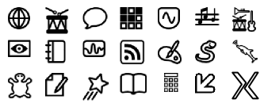
Il existe des centaines d'Activités écrites pour Sugar et de nouvelles Activités sont créées chaque jour. Une bonne manière de trouver de nouvelles activités est de se rendre sur http://wiki.laptop.org/go/Activities.
Vous trouverez ci-dessous un aperçu de la variété des Activités créées et supportées par la communauté Sugar.
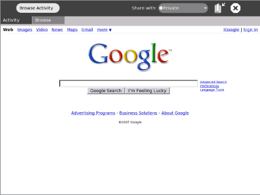
Naviguer est une application Web simple qui vous permet d'accéder et de faire des recherches sur Internet ainsi que de partager vos marque-pages avec vos amis (reportez vous au chapitre Naviguer pour plus d'information).
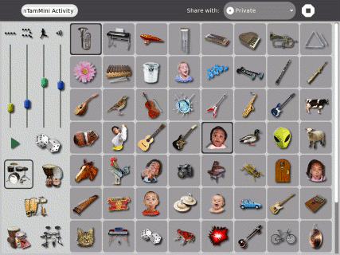
TamTamMini est une façon rigolote et puissante pour interpréter de la musique et jouer des instruments. Elle est assez simple pour être utilisée par les plus jeunes.
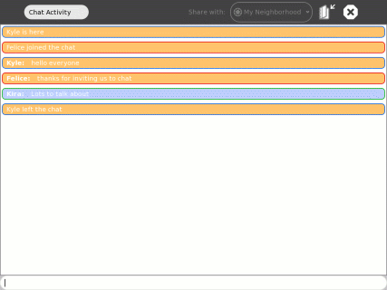
L'Activité Discuter vous permet de taper des messages qui peuvent être vus par d'autres utilisateurs Sugar. Elle peut être utilisée par deux personnes comme par une classe entière (reportez vous au chapitre Discuter pour plus d'informations).
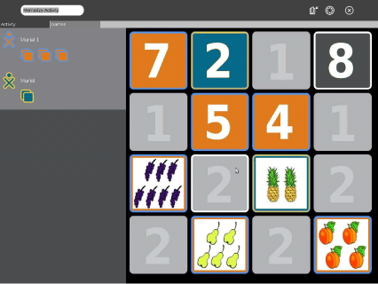
Mémoriser est le jeu classique de mémorisation où l'on cherche et assemble des paires d'éléments, mais avec un plus : les cartes à assembler peuvent ici être des objets multimédia, comme des images, des sons ou du texte. Vous pouvez jouer aux jeux existants ou en créer de nouveaux.
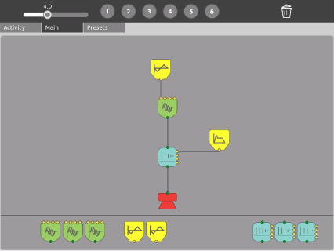
SynthLab est un mini-laboratoire pour la création de circuits acoustiques et électroniques. Il a été créé pour des adolescents prêts à s'aventurer dans des conceptions sonores plus sophistiquées.
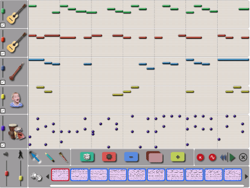
TamTamEdit est un environnement intuitif pour composer de la musique. Vous pouvez créer, modifier et organiser des notes sur des pistes virtuelles, permettant ainsi des variations pratiquement illimitées dans les styles musicaux.
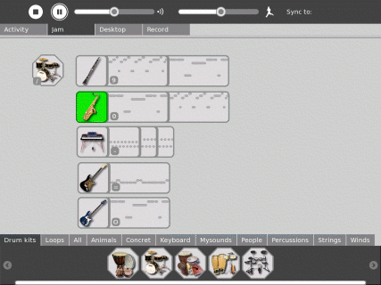
TamTamJam est une façon amusante et puissante d'interpréter de la musique, de jouer de divers instruments ainsi que de collaborer musicalement avec d'autres enfants.
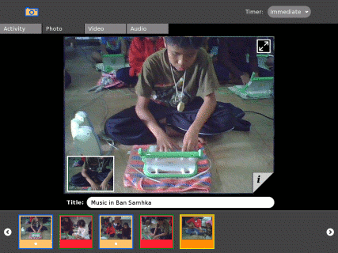
L'Activité Enregistrer vous offre une manière simple de prendre des photos, de faire des présentations de diapositives ainsi que d'enregistrer de l'audio et de la vidéo - tous les contenus pouvant être partagés avec d'autres (reportez vous au chapitre Enregistrer pour plus d'informations).
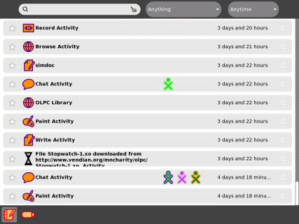
L'Activité Journal est un journal automatique de tout ce que vous faites avec Sugar. Vous pouvez l'utiliser pour organiser votre travail ou pour revenir sur des projets anciens. Les parents et enseignants peuvent l'utiliser pour voir les progrès de l'enfant (reportez vous au chapitre Journal pour plus d'informations).
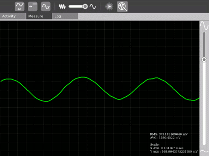
Mesures est un outil qui peut être utilisé pour observer des phénomènes physiques ainsi que des événements réels. Avec lui, vous pouvez mesurer et enregistrer des données ou encore créer des graphiques. Vous pouvez explorer les données et lier des événements entre eux.
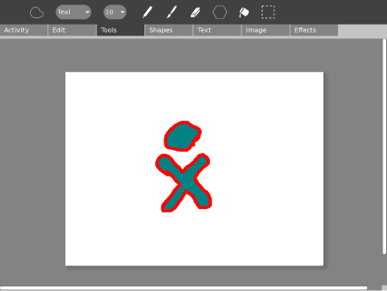
L'Activité Dessiner vous offre un outil de dessin pour vous ou pour partager avec des amis. Vous pouvez y dessiner des images libres avec un pinceau et un stylo ainsi qu'utiliser la barre d'outils pour y jouer et y expérimenter des formes. Vous pouvez y saisir du texte, y importer des images, et y placer des objets comme vous le désire.
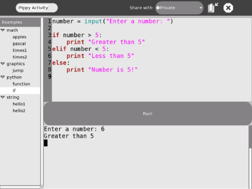
Pippy est une introduction simple et amusante à la programmation Python, qui est le langage de programmation dynamique à la base de la plupart des logiciels sur le XO.
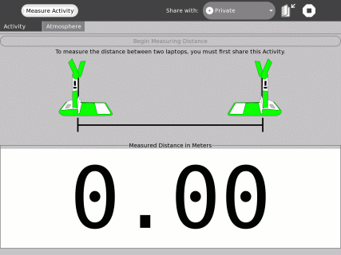
Cette Activité vous permet de mesurer la distance entre deux XO en mesurant le temps que prend le son entre les deux. Cette Activité, comme les Activités Mesures et Enregistrement, permet d'utiliser le XO pour explorer votre environnement physique.
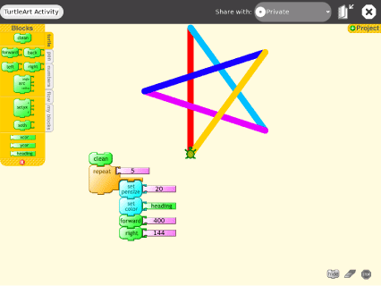
Turtle Art vous permet de programmer une "tortue" en Logo pour créer une œuvre complexe et colorée. Des éléments simples de programmation se combinent facilement afin de donner vie à l'art (voyez le chapitre Turtle Art pour plus d'information).
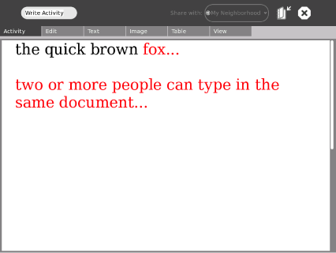
Écrire est une Activité basique d'édition de texte composée d'une interface et d'outils simples. C'est une application facile d'utilisation pour écrire une histoire, un poème ou compléter un essai. Elle propose aussi des fonctions plus avancées comme l'insertion d'images, la création de tables ou la mise en page. Elle supporte également l'édition collaborative en temps réel, ce qui permet à un groupe de travailler ensemble dans le but d'éditer facilement et sans heurts un texte. (Se reporter au chapitre Écrire pour plus d'information.)
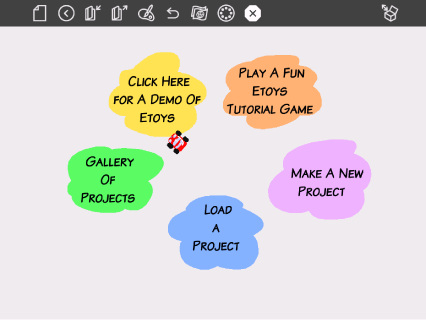
Etoys vous permet de créer des modèles, des simulations ainsi que des jeux avec du texte, des graphismes et du son. Ce qui vous permet d'explorer des idées et d'apprendre en faisant. Vous pouvez également partager, en temps réel, des bureaux entre utilisateurs d'Etoys. Une communauté mondiale d'utilisateurs et de développeurs Etoys travaille sur son contenu, sur son historique et sur des exemples (Vous reporter à http://wiki.laptop.org/go/Etoys pour plus d'informations).
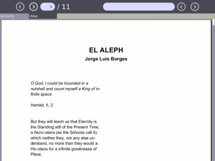
Sugar intègre un lecteur incorporé de livres électroniques. Le portable XO possède un écran qui peut être tourné à 180 degrés et recouvrir le clavier afin que vous puissiez lire sur votre XO comme sur un livre. Lisez vos livres favoris sur votre XO en étant assis dehors à la lumière du jour.
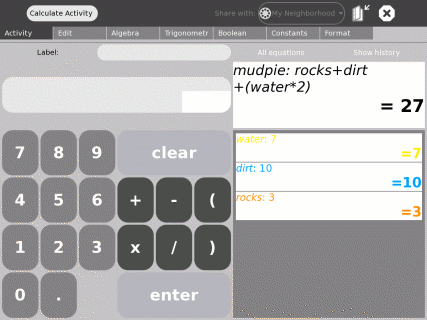
Calculer fournit une calculatrice avec une interface simple et directe. C'est lisible et facile à utiliser - même pour les enfants les plus jeunes - mais cette Activité supporte aussi des fonctions mathématiques plus compliquées.
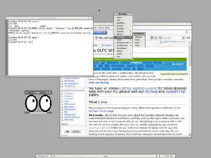
L'Activité X Windows fournit un espace pour un espace de travail X Windows dans Sugar. Utilisez cette Activité pour exécuter des programmes X Windows.
Il y a dans Sugar un nombre sans cesse croissant de contenus téléchargeables et d'outils pour accéder à des applications basées sur le Web. Ceci comprend les applications de Google, SimCity, GCompris (un ensemble de logiciels primés pour l'éducation des enfants) ainsi que des centaines d'autres applications. Au niveau mondial, il y a actuellement des milliers de développeurs d'applications pour Sugar. Cette communauté attend vos retours d'expérience afin de mieux répondre aux besoins d'apprentissage des enfants.
| Installer des Activités | Index | Au-delà des Activités |